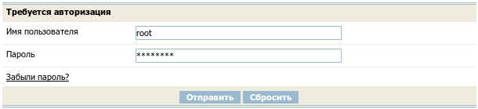

Для входа в систему необходимо авторизоваться. Для этого нужно в браузере открыть страницу контрольного центра:
http://ваш_сайт/cc/
В появившуюся форму авторизации введите ваш логин (имя доступа) и пароль.

Нажмите кнпку "Отправить". Вы попадете на страницу контрольного центра.